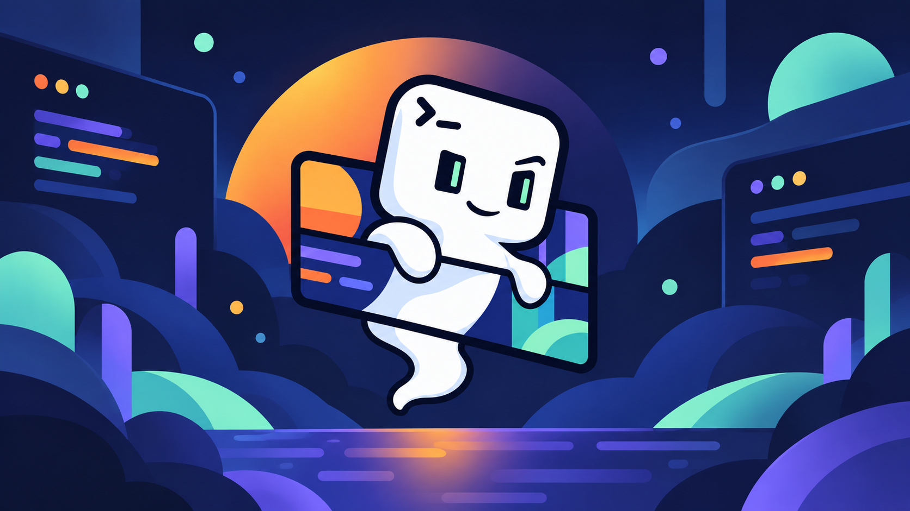

Get started
Make Ghostty
your own.
Wallpapers, colors, and visual settings. One reusable profile.
A small Rust CLI for a terminal that feels like home.
Linux stablemacOS experimentalMIT licensed
welcome to your new terminalghostty

# A little more you. Every time you open a terminal.
❯ ghostty-wall apply welcome
# Wallpaper + generated terminal colors
❯
BUNDLED WELCOME WALLPAPER
A good place to start
Less configuration. More character.
Colors that belong together
Generate a complete terminal palette from your wallpaper, use a Ghostty theme, or set every color yourself.
Know what changes
Preview a profile with plan before applying it. Your unrelated Ghostty settings stay untouched.
A way back, built in
Return to a saved environment with previous, even if its original wallpaper source is gone.
A recipe. A result. A record.
01 / INTENT
Profile
The TOML recipe for the look you want.
02 / RESULT
Environment
An immutable snapshot of resolved images and settings.
03 / HISTORY
Activation
A durable record of the environment you applied.